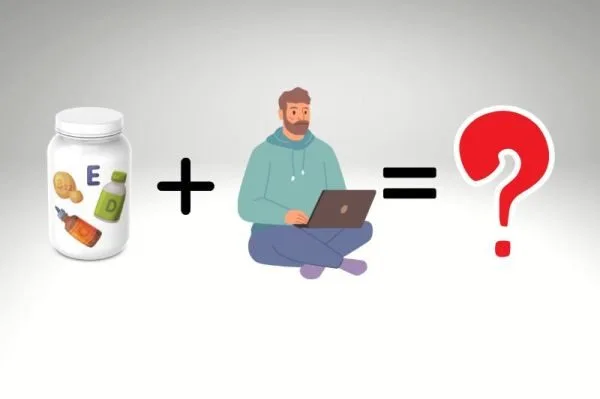
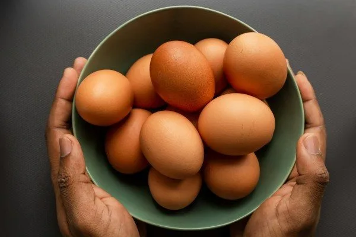

老化，真的被「調回去」過一次
2026-10-07
2019年TRIIM試驗發現，生長激素、DHEA與二甲雙胍合併治療一年後，受試者的甲基化年齡平均回推了2.5到3.73歲。

65 篇文章
2019年TRIIM試驗發現，生長激素、DHEA與二甲雙胍合併治療一年後，受試者的甲基化年齡平均回推了2.5到3.73歲。

DNA甲基化會隨老化出現表觀遺傳漂移，目前只有飲食、睡眠與代謝介入等生活方式被證實能減緩甲基化老化速度。

2012 年新加坡研究顯示特發性便祕患者停掉纖維後排便頻率改善，但這不代表纖維沒用，而是不是每個人都適合高纖。

慢性發炎、胰島素阻抗、糖尿病、缺乏運動對心血管風險的影響不亞於 LDL，綜合評估代謝健康指標比單看膽固醇更重要。

模擬斷食飲食能啟動正常細胞的保護機制，同時讓腫瘤細胞變脆弱，搭配化療可能提升療效、減少副作用。

GHK-Cu 是隨年齡下降的銅螯合物，能改變 31% 的基因表現、促進組織修復並具抗發炎作用，但目前注射劑無合法管道。

沒有使用降脂藥物但 LDL 仍低於 50 mg/dL 需要往下追，可能反映甲狀腺亢進、肝功能受損或惡性腫瘤等潛在疾病。

Jason Fung 提出食物稠度影響飽足感，研究顯示稠的飲品讓之後披薩進食量較少，因此避免把熱量喝掉比計算熱量更有效。

PhenoAge 用九項常規血液檢查推算生物年齡，比表觀遺傳時鐘便宜得多，能預測死亡率且能透過飲食干預改善。

胖多囊以胰島素阻抗為核心、重在降胰島素；瘦多囊雄性素常來自腎上腺，需穩定血糖、重視睡眠與壓力管理，兩者治療方向不同。

胰島素升高會抑制尿酸排出、促進重吸收，使尿酸與代謝症候群密切關聯，所以即使飲食克制，胰島素沒控制好尿酸還是難以降低。

粒線體問題是數量不足加燃料過量的容量問題，而非構造損傷，運動與低碳飲食可增加粒線體數量與調整代謝負載。

氫氣選擇性清除最毒的羥自由基而不傷害有生理功能的活性氧，能啟動細胞抗氧化系統並保護粒線體，特別在脂肪肝治療上有臨床證據。

長期高胰島素血症會刺激胰臟腺泡細胞過度生產消化酵素，引發反覆發炎，是胰臟癌癌前病變形成的關鍵驅動因素。

耐力運動增加粒線體數量有氧容量，阻力運動強化粒線體代謝功能，混合訓練對粒線體品質管控最佳。

過量進食導致粒線體電子傳遞鏈電子堆積，形成超氧化物自由基增加氧化壓力，直接損傷粒線體DNA。

脂肪肝是肝細胞內游離脂肪酸等造成內質網壓力、粒線體損傷、細胞死亡，進而引發發炎與纖維化的連鎖傷害過程。

1965年蘇格蘭的 Angus Barbieri 在醫療監督下斷食382天，體重從207公斤降到82公斤，但作者強調案例極端，不建議任何人仿效。

大腦膠質淋巴系統主要在深睡期間清除澱粉樣蛋白和濤蛋白廢物，睡眠不足導致廢物堆積增加阿茲海默症風險。

因紐特人因低碳飲食無心臟病的說法流傳五十年，但實際研究顯示他們的心血管疾病發生率與其他族群相近甚至更高。

心臟衰竭、老化的肌肉無力、記憶退化。三件看起來不相關的事，在細胞層面可能有同一個根源。2025 年 9 月，FDA 核准了史上第一個以「修復心磷脂」為機轉的藥物 elamipretide（SS-31）。

一位總膽固醇 705 mg/dL 的男性維持近七年，電腦斷層顯示斑塊體積為 0 mm³，作者以此個案介紹 LMHR 與脂質能量模型。

2026 年研究追蹤 195 位第 2 型糖尿病患者，低醣介入組 21 項發炎指標中 19 項顯著改善，作者據此說明低醣與單純少吃的差異。

文中整理 Gundry《腦腸悖論》的觀點：腸道菌透過短鏈脂肪酸、血清素與內毒素影響粒線體，建議以多酚等飲食保護粒線體。

LDL 受抽血前約 72 小時飲食影響，Dave Feldman 改吃白吐司七天讓 LDL 從 296 降到 83 mg/dL，單次數值代表性有限。

2021 年隨機對照試驗中，糖尿病前期長者每週多吃兩罐沙丁魚，一年後 FINDRISC 極高風險比例由 37.3% 降到 7.7%，胰島素阻抗也下降。

Norwitz 吃一個月沙丁魚後變得耐冷，文中整理 2026 年 Cell 研究：EPA 轉成 12-HEPE，經 Olfr110 受體促進燃脂。

被告知睡眠品質差的受試者認知測驗表現明顯下降與實際睡眠無關，安慰劑效應或古典制約影響大腦表現，相信睡眠充足本身成為睡眠品質的一部分。

靜脈維他命C血漿濃度達口服極限的60–100倍，機制是生成H₂O₂促癌細胞氧化死亡，治療期間需避免同日給銅和麩胱甘肽並確保足夠銅質補充。

74歲輕度認知障礙患者執行15:9間歇性斷食12週，蒙特婁認知評估改善1.7分且體重無差異，配合度達87%，但長期效果仍需更大規模研究支持。

哈佛 2014 年研究讓受試者短期吃純動物性或純植物性飲食，發現腸道菌相隔天就明顯改變，停止後兩天內即恢復基線。

運動過量可能增加冠狀動脈斑塊的形成，但運動對心血管長期保護益處仍然明確，適度最為重要。

大腦靠葡萄糖供能，神經元胰島素阻抗時能使用酮體替代燃料，有助於神經退化性疾病的改善。

某些自體免疫疾病源於分子模擬現象，病原體和食物蛋白質結構相似引發免疫系統誤擊自身組織。

飯後血液指標反映胰島素反應與代謝控制的實際狀況，往往比飯前數值更能說明真實身體狀態。

2007 年一項大鼠研究發現 94% 的老鼠在糖精水與古柯鹼之間選了糖精，作者藉此說明甜味是超常刺激，減糖要靠環境設計而非意志力。

一項隨機對照交叉試驗發現，餐後僅 1 分鐘舒適步調上下樓梯就能降低血糖與胰島素，3 分鐘更能改善胰島素敏感度，受試者主要是健康年輕人。

生活習慣最差的人死亡風險比習慣良好者高78%，良好習慣可抵銷遺傳帶來的62%短壽風險，關鍵四習慣為不吸菸、規律運動、充足睡眠、健康飲食。

腸腦透過荷爾蒙訊號、直接神經連結、微生物群、免疫介導四個高度整合的系統通訊，腸道失衡與發炎會直接影響大腦功能與行為。

PREDIMED試驗追蹤7,447名高風險者4.8年，結果顯示地中海飲食加橄欖油或堅果，主要心血管事件風險比低脂飲食低28-31%。

總膽固醇與死亡風險呈U型曲線關係，過低的膽固醇反而與更高死亡風險相關，最低死亡率的區間約在210至249 mg/dL。

納豆中的納豆激酶能有效溶解血栓，經常食用納豆可降低約25%的心血管疾病死亡風險，效果遠優於其他大豆製品。

作者引用《Environment International》研究指出，吞入的超細懸浮微粒會改變腸道菌相、加重動脈硬化與肝臟氧化壓力，並建議護腸。

生酮飲食搭配低醣飲食在個案報告中與血糖改善和視網膜剝離自行恢復相關，但療效因人而異，重要是在醫療團隊監督下進行。

高Lp(a)單獨存在風險不高，但合併高腰臀比時心血管事件風險增加2.34倍，因內臟脂肪促發炎和血栓傾向，重點是維持理想腰臀比。

模擬斷食飲食（低熱量低蛋白低糖）能讓癌細胞進入脆弱狀態、對化療和免疫治療敏感，正常細胞反而獲得保護，臨床試驗顯示安全可行。

2023 年 Nutrients 研究發現職業足球員高強度訓練會使腸漏指標上升，每天吃 40 克黑巧克力一個月則讓指標幾乎不變。

間歇性斷食即使體重不變，仍能透過提升胰島素敏感性、降低血糖波動與促進自噬作用帶來健康改善。

月經週期中黃體期的黃體素上升會增加食慾約 238 至 600 大卡，是正常生理現象而非意志力問題。

多項研究證實每日 8000 步可顯著降低全因死亡率與心血管疾病風險，是實証支持的活動量目標。

蘿蔔硫素透過啟動 Nrf2 路徑提升體內解毒酵素，並保護粒線體功能，對代謝與免疫防護具保護價值。

ApoB是預測動脈硬化風險的重要指標，比LDL-C更準確反映血液中脂蛋白顆粒數量與心血管風險。
低糖飲食導致膽固醇升高的瘦體高反應者仍需監測，高LDL-C是否代表冠狀動脈斑塊需進一步檢驗。

魚類含Omega-3多元不飽和脂肪酸對心腦健康有益，儘管有重金屬風險，益處仍可能抵消危害。

將進食時間限制於12小時內可提升胰島素敏感性，與少量多餐相比，低頻率進食對血糖控制可能更有效。

單元不飽和脂肪酸對胰島素影響最小，飽和脂肪會導致胰島素阻抗，多元不飽和脂肪會降低胰島素分泌。

代謝適應導致快速減重後基礎代謝持續下降6年以上，應避免極端低熱量飲食，增加蛋白質、搭配阻力訓練和循環減重策略。

維生素D活性形式透過維生素D受體調控基因表達，減少促炎細胞因子、增加抗炎細胞因子，對多發性硬化症、第一型糖尿病和紅斑狼瘡有幫助。

年長者堅持規律進行低至中度運動如跑步與走路能維持肌肉幹細胞含量與神經肌肉連接的完整性狀況。

營養補充配方雖無法完全抵銷久坐帶來的代謝影響，但在脂質代謝與肌肉保護方面展現顯著預防效果。

研究顯示運動無法完全抵銷久坐的傷害，需要減少久坐時間而非只在下班後集中運動來補償其傷害效果。

胰島素分泌細胞功能障礙在第二型糖尿病早期就出現，即使細胞數量未減少，強調治療應優先恢復細胞功能。

在體重正常且無糖尿病者中，胰島素阻抗對膽囊收縮功能有影響，低碳水飲食有助維持膽囊健康和避免膽汁濃縮。

作者引用2024年Cell文獻，說明吃進膽固醇會讓腸道荷爾蒙Cholesin抑制體內合成，個體差異大，他認為一天吃四到六顆雞蛋可以接受。

研究顯示自行車手採行16:8間歇性斷食四週能減少相對脂肪11%並維持肌肉量，不影響有氧運動表現。